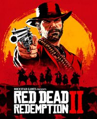

www.RED2.com
2021.4.9
RED2
Rockstar
Red Dead Redemption 2
R
IGN
grade
10 10 10 10
"Red Dead Redemption 2" tells a western story about loyalty, faith and evil, depicting a western gang that has withered under the historical torrent of industrial civilization. Rockstar has created the most realistic and vivid open world to date, where players can do many things,where players can do many things,where players can do many things,
America, 1899. The end of the Wild West era has begun as lawmen hunt down the last remaining outlaw gangs. Those who will not surrender or succumb are killed. After a robbery goes terribly wrong in the western town of Blackwater, Arthur Morgan and the Van der Linde gang are forced to flee.
"" is undoubtedly a very beautiful game. The light is simply fantastic, and in the misty night, the sight of moonlight falling on the trees is especially intoxicating. In addition, I also like the changes in light and shadow when Arthur leaves a dark place and walks under the sun.
RockstarRed Dead Redemption 2
Loyalty
faith
The game has always been able to maintain a sense of freshness, it is really very unique. This is not only due to the scale and diversity of the entire environment, but also to the kinetic energy of all places that gives people a lifelike feeling. Although the vast natural world of "Red Dead Redemption 2" is much sparser than that of "Grand Theft Auto V", there are still many wild animals waiting to be discovered and many passers-by waiting to interact (help) , There are many places waiting for you to survey.
The highest level of open world will ignore the existence of players: whether you are or not, everything runs freely. I can quietly watch the lumberjack chop down tree after tree, and I can naturally follow an Englishman to find his partner. These details have no effect on Arthur's main storyline, but a world is constructed well, and the player is just a bystander, not the center of the universe. "Red Dead Redemption 2" is outstanding at this point-or unique.
Arthur Morgan----------Salvation
Van der Lindach----------Bandit
Mica----------Wickedness
Arthur MorganGet salvation
Time passed............... Cowboy
Rule society............... Time Wheel
Salvation............... exile
Arthur Morgan
，
I don’t want to be the next Michael Jordan, I only want to be Kobe Bryant
www.RED2.com